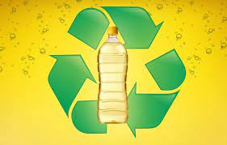
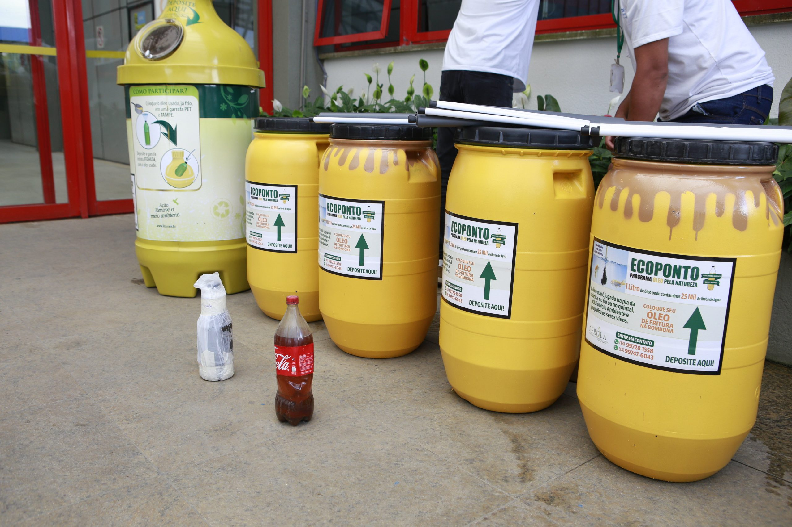
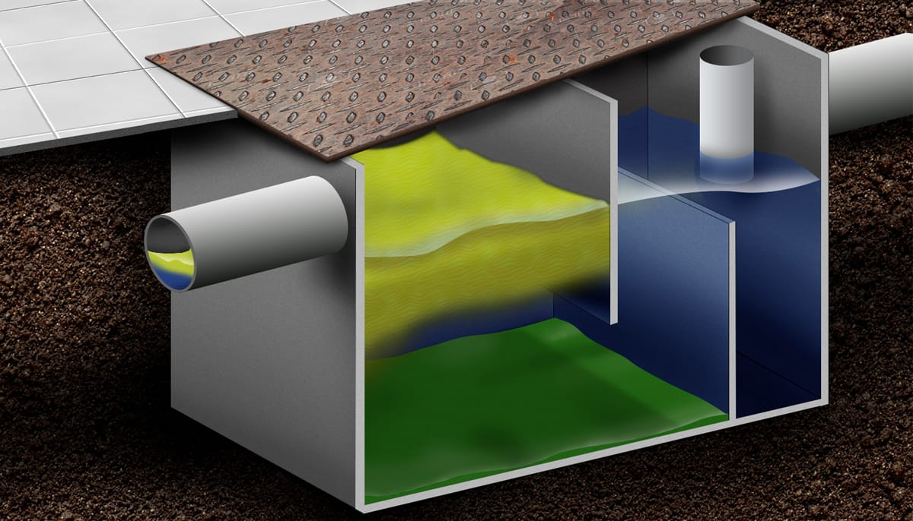
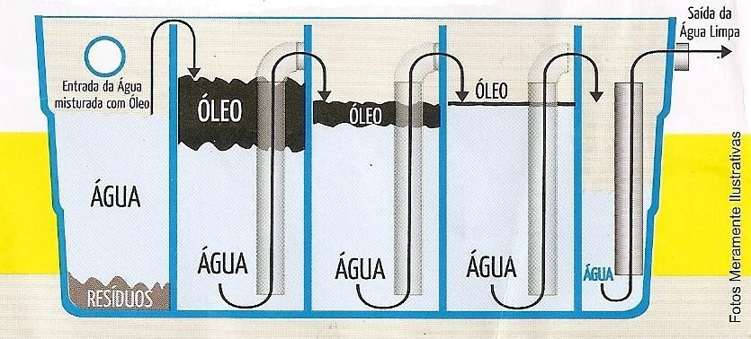
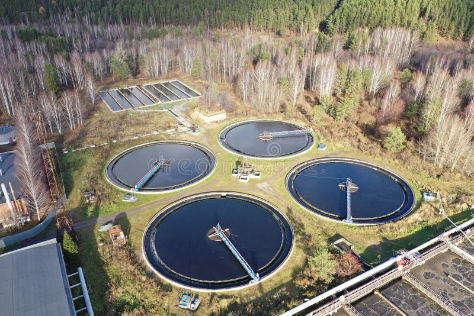

O QUE É A COLETA DE ÓLEO?
A coleta de óleo em uma Estação de Tratamento de Efluentes (ETE) refere-se ao processo de recolhimento e separação de óleos presentes nos efluentes líquidos que entram na estação. Essa etapa é essencial para prevenir a contaminação ambiental, garantir a eficácia dos processos de tratamento e promover a conformidade com regulamentações ambientais.

TIPOS DE COLETA
O óleo nos efluentes pode ter diversas origens, como processos industriais, descargas domésticas, óleos de veículos, entre outros. A coleta de óleo na ETE geralmente é realizada através de diferentes técnicas.

Caixas de Gordura:
Instaladas em áreas onde há a presença de óleos e gorduras, como cozinhas industriais e restaurantes. As caixas de gordura ajudam a reter os óleos antes que os efluentes atinjam a estação de tratamento principal.

Separadores de Óleo
Equipamentos projetados para separar óleos e graxas dos efluentes líquidos. Eles utilizam princípios de separação física para remover esses materiais antes que o efluente prossiga para os estágios subsequentes de tratamento.

Tanques de Sedimentação:
Podem ser utilizados para permitir que óleos e partículas mais leves se separem do líquido mais pesado por meio da sedimentação.
